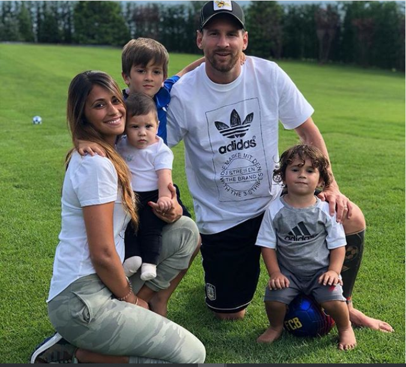
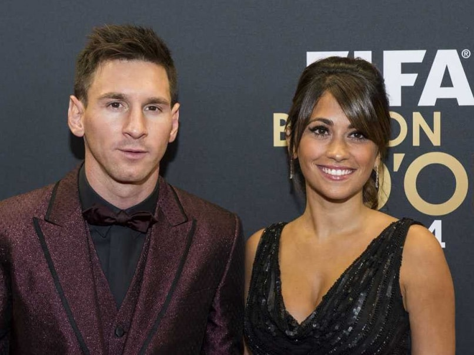

Endocrinologist Diego Schwarzstein, who addressed Messi's growth hormone deficiency from 1997 to 2001. Messi and Roccuzzo have three sons: Thiago, Mateo and Ciro. To celebrate his partner's first pregnancy, Messi placed the ball under his shirt after scoring in Argentina's 4–0 win against Ecuador on 2 June 2012, before confirming the pregnancy in an interview two weeks later. Thiago was born in Barcelona on 2 November 2012. In April 2015, Messi confirmed that they were expecting another child. On 30 June 2017, he married Roccuzzo at a luxury hotel named Hotel City Center in Rosario. In October 2017, his wife announced they were expecting their third child.
 